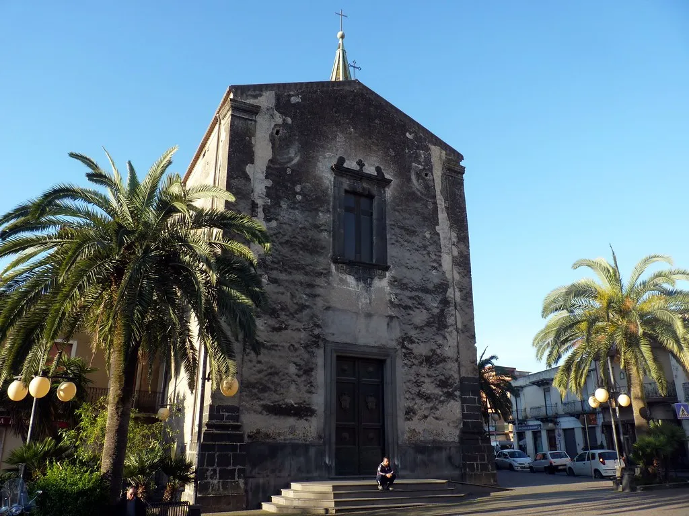
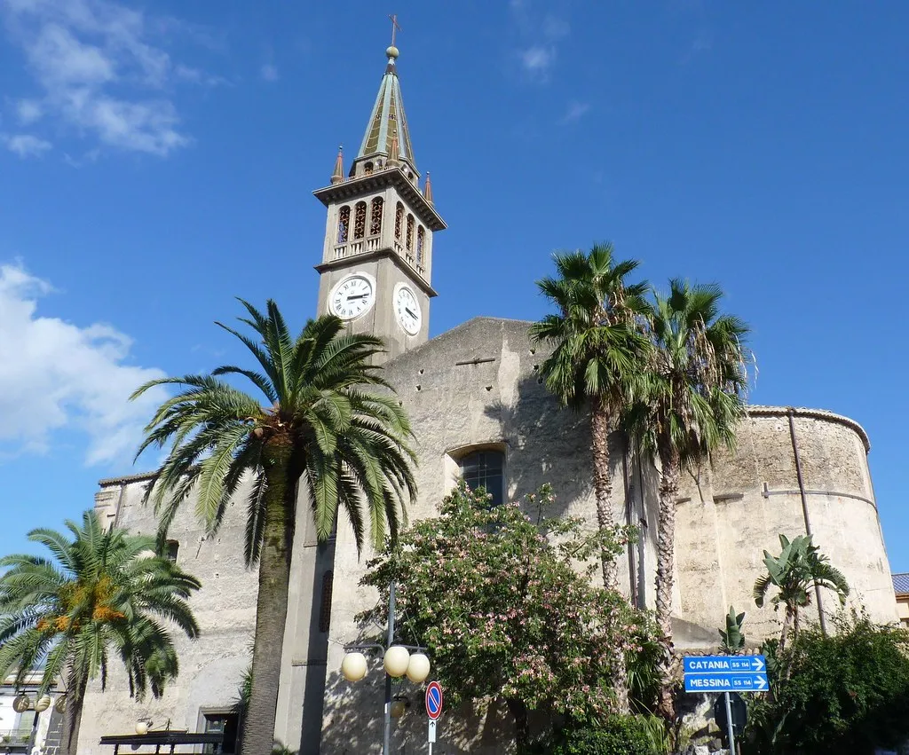
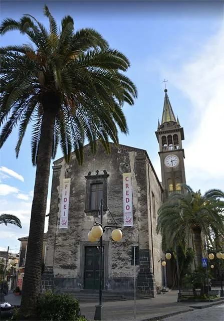
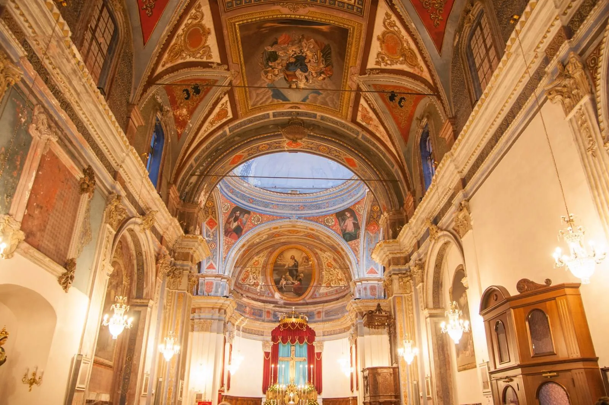
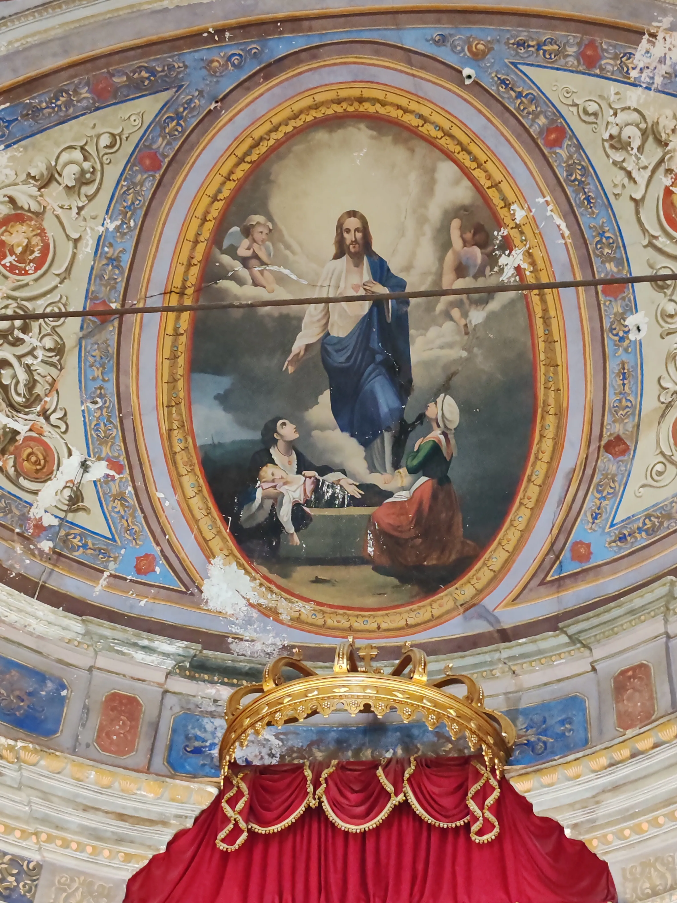
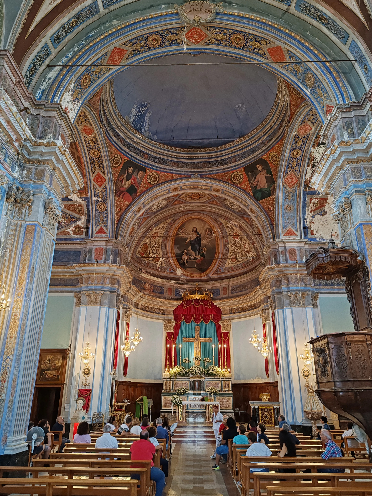
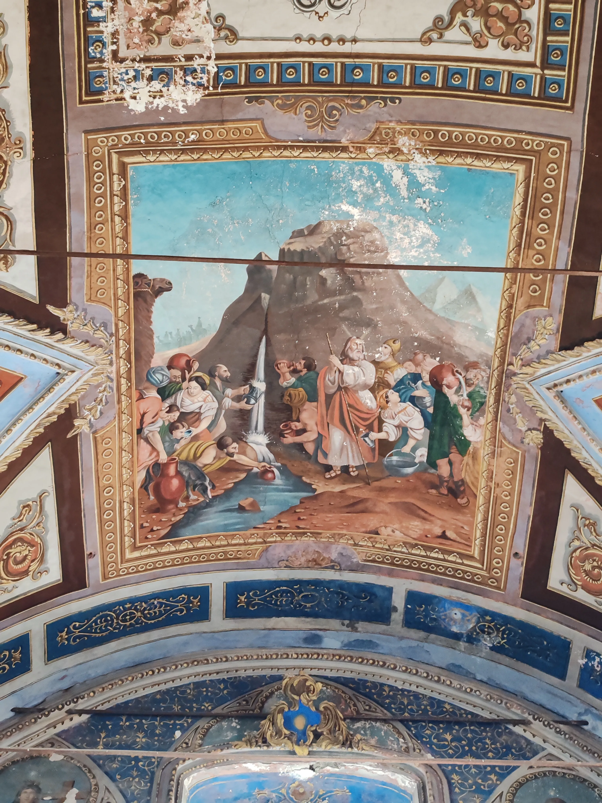
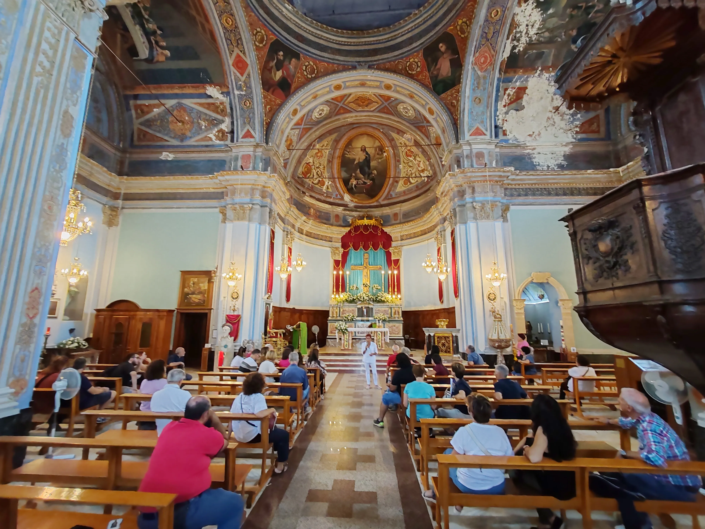
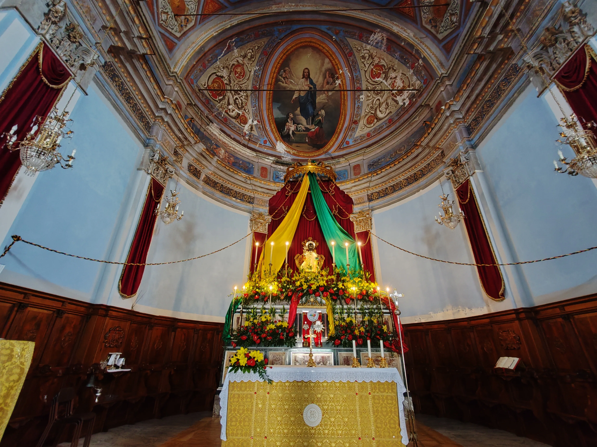
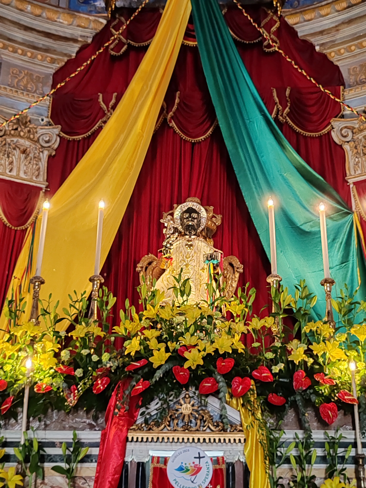
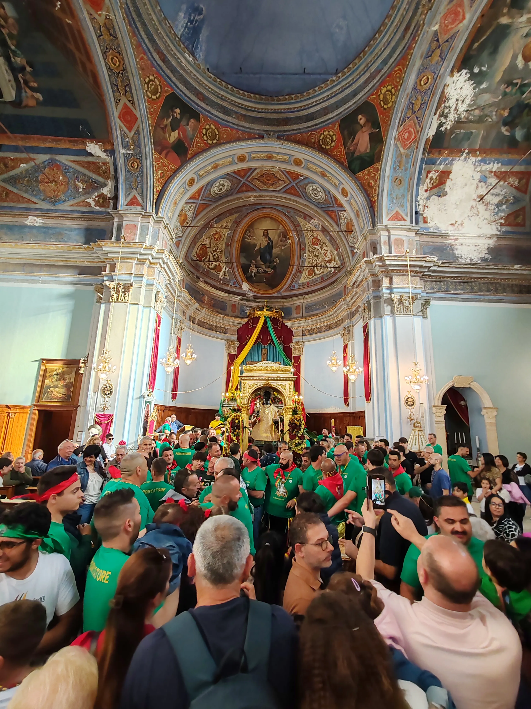
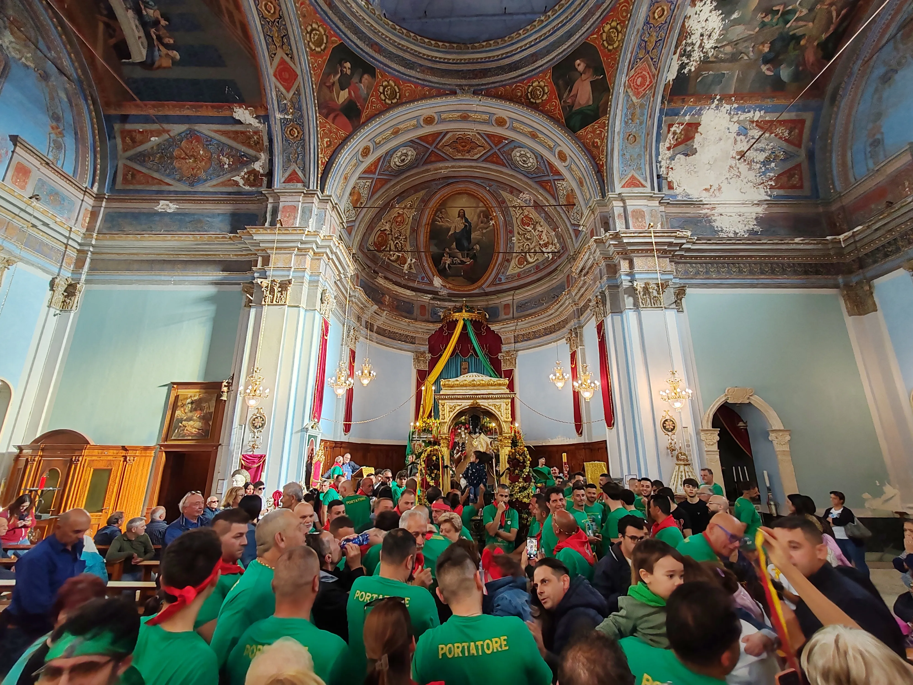
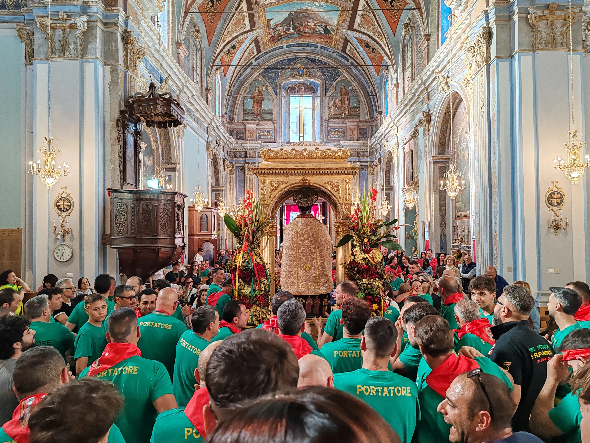
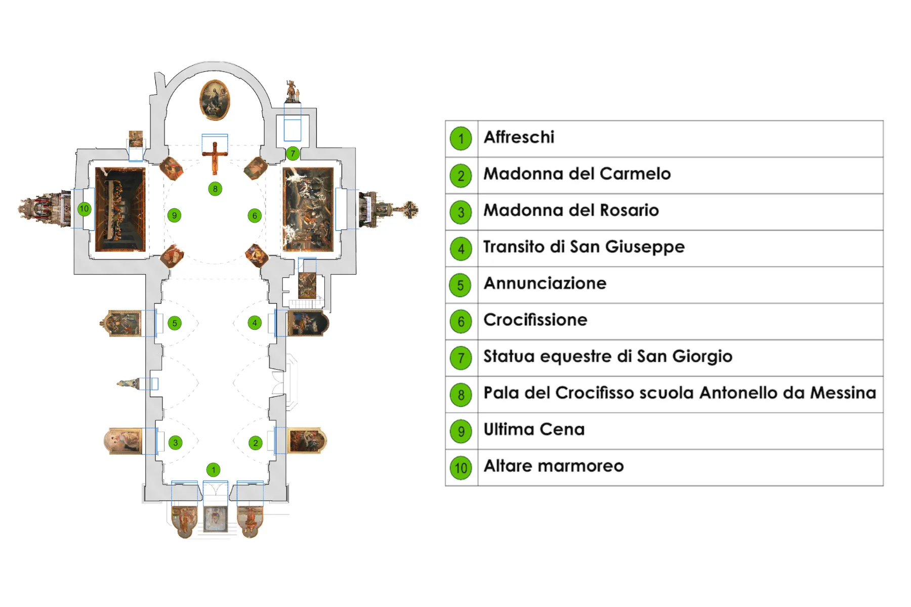
La Chiesa Madre di Calatabiano si affaccia sulla piazza centrale del paese ed è da sempre il cuore della vita religiosa e comunitaria della cittadina. Rappresenta il principale luogo di culto, sede delle più importanti celebrazioni liturgiche e punto di riferimento spirituale per l’intera comunità. Dedicata a Maria Santissima Annunziata, fu costruita tra il 1737 e il 1740. L’aspetto esterno, sobrio ed essenziale, contrasta con la ricchezza decorativa degli interni. La facciata si presenta semplice, caratterizzata da linee pulite e da una finestra centrale incorniciata da pietra lavica. L’edificio ha una pianta a croce latina, con due ingressi principali e lesene addossate alle pareti, ornate da capitelli compositi. Il transetto, coperto da volte a botte, è sormontato da una cupola che conferisce slancio e armonia all’intera struttura. L’altare del Santissimo Sacramento è in stile barocco ed è realizzato con preziosi marmi intarsiati provenienti da Taormina. Al di sopra si trova una copia dell’Ultima Cena di Leonardo da Vinci. Sull’altare del Santissimo Crocifisso è raffigurata la Crocifissione di Gesù, impreziosita dalla presenza di un importante crocifisso ligneo ricavato da un tronco d’ulivo, realizzato da Giovanni Salvo D’Antonio, nipote di Antonello da Messina. Quest’opera è considerata una delle più preziose custodite all’interno della chiesa. Il presbiterio è circondato da un coro ligneo risalente all’Ottocento ed è arricchito da decorazioni pittoriche murali realizzate dai pittori Antonino Freri e Carmelo Ganguzza. L’interno della chiesa è caratterizzato da numerosi affreschi e dipinti murali. Nelle vele del transetto sono raffigurati i quattro Evangelisti con i rispettivi simboli iconografici: San Marco con il leone, San Matteo con l’angelo, San Giovanni con l’aquila e San Luca con il bue. Nel catino centrale spicca la raffigurazione del Sacro Cuore di Gesù, opera di grande impatto visivo che cattura immediatamente lo sguardo del visitatore. Sulla volta della navata è rappresentato Mosè, mentre lungo la stessa area si possono ammirare quattro importanti tele: La Madonna del Rosario, La Madonna del Carmine, San Giuseppe Morente e Maria Santissima Annunziata. Da quest’ultima opera deriva il titolo della chiesa. Un tempo, ai suoi piedi, si trovava la tomba di Ignazio II Gravina, fondatore di Piedimonte Etneo e Principe di Palagonia. Di particolare pregio artistico sono anche il pulpito ligneo, decorato al centro con l’aquila simbolo della famiglia Borbone, e la fonte battesimale in stile rococò. All’interno della chiesa sono presenti inoltre diverse sculture sacre, tra cui la più importante è quella di San Giorgio, patrono del paese, il cui culto deriva dall’antica tradizione normanna.